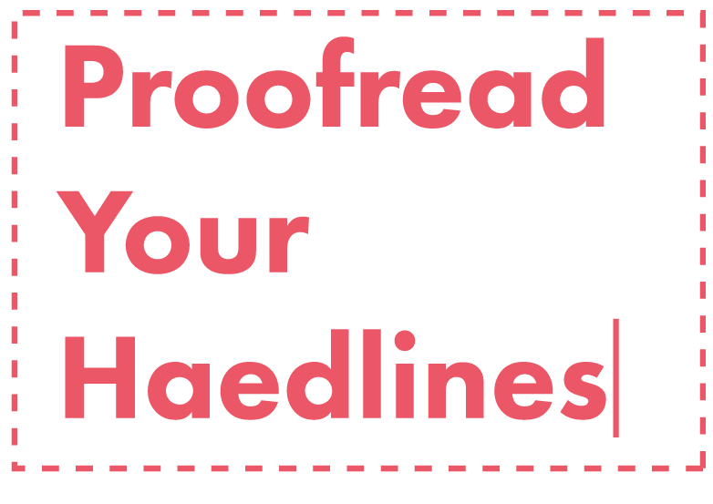
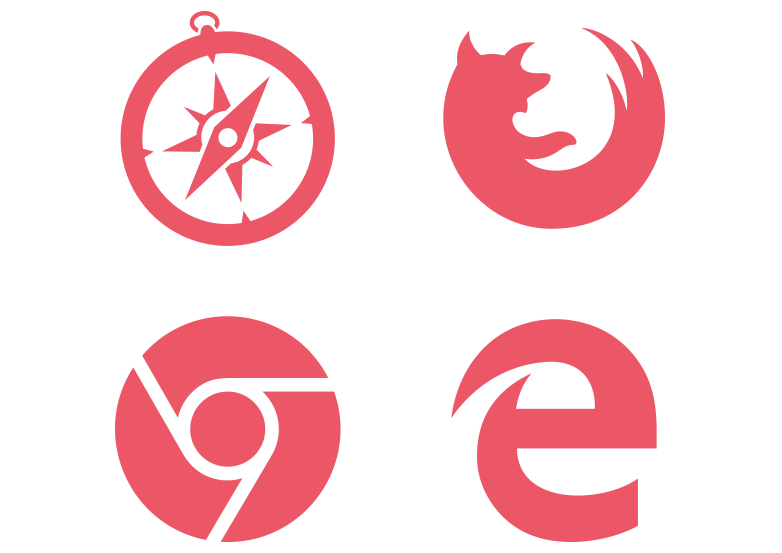
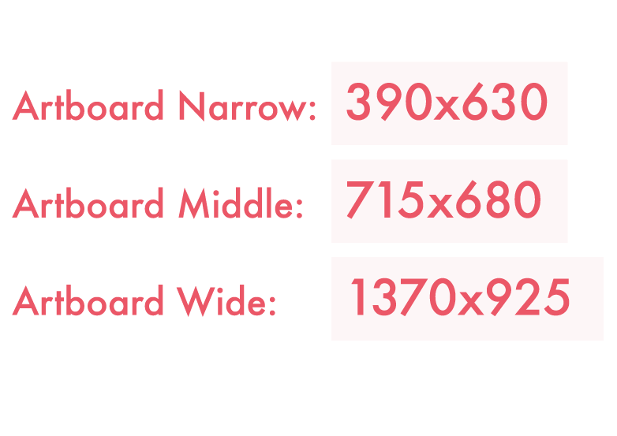
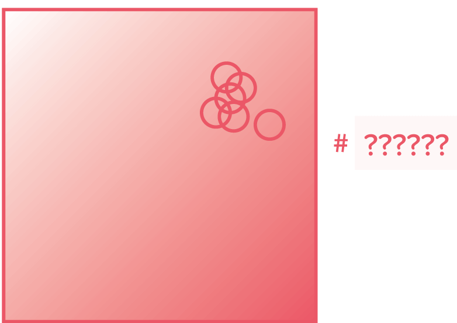

质量 听过"差一点点就完美了"的话么？通常你的作品会出现拼写错误或者有潜在的内容不准确。在出稿之前检查一遍你的PSD是非常有必要的 检查校对 让别人帮你找，你会很快发现你的语法错误。i  Proofread 对于设计师来说, 当他们专注于单个像素的时候, 就很容易忽略像标题拼写错误这样的事情。 检查所有的切图 不要使用有水印的图片，这就像你穿着刚买的衣服还带着标签一样。i 检查所有的切图 确保你有图片的版权，使用没有获取版权的图片，如果作者找上门来就尴尬了。 熟悉浏览器的兼容性 和前端小伙伴保持友好关系！在设计之前搜索一些相关信息，看看自己的设计是否得到浏览器的支持，适当时候要放弃圆角/渐变/阴影等特性。i  熟悉浏览器的兼容性 不同的浏览器会呈现不同的效果, 最重要的是, 有一些浏览器不支持 CSS3, 或是最基本的透明 PNG (嗯, 老IE)。 适配所有屏幕 这样的设计文件是不行的 “_iPhone.psd”, “_iPad.psd” and “_desktop.psd”. i  适配所有屏幕 世界上有数不清的设备，那些不主流的设备尺寸适配你也要考虑进去。 保持一致性 你是不是用了三种略微不同的的蓝色呢？你用的红色和logo的色值一样么？i  保持一致性 如果你真的选了10种不同的蓝色，前端攻城师才不会一个个去验证你的色彩是否一样。他只会选择一个他觉得顺眼的蓝色。